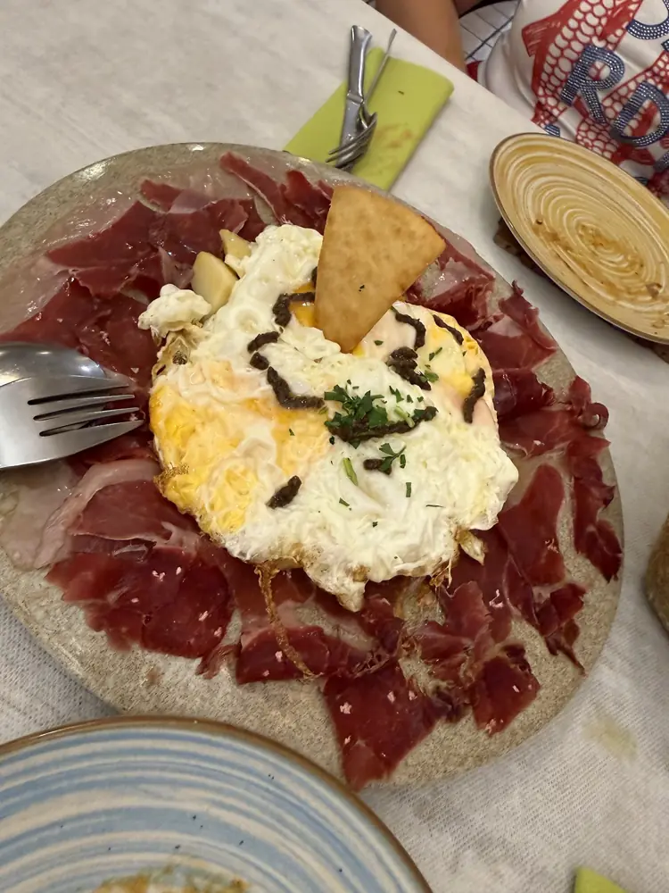
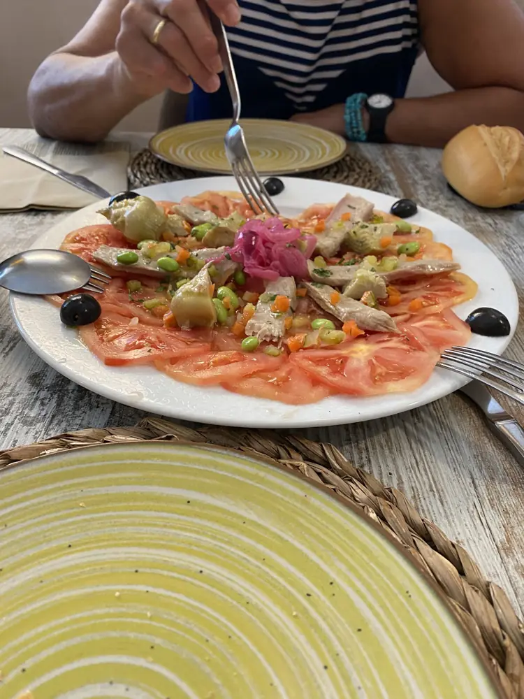
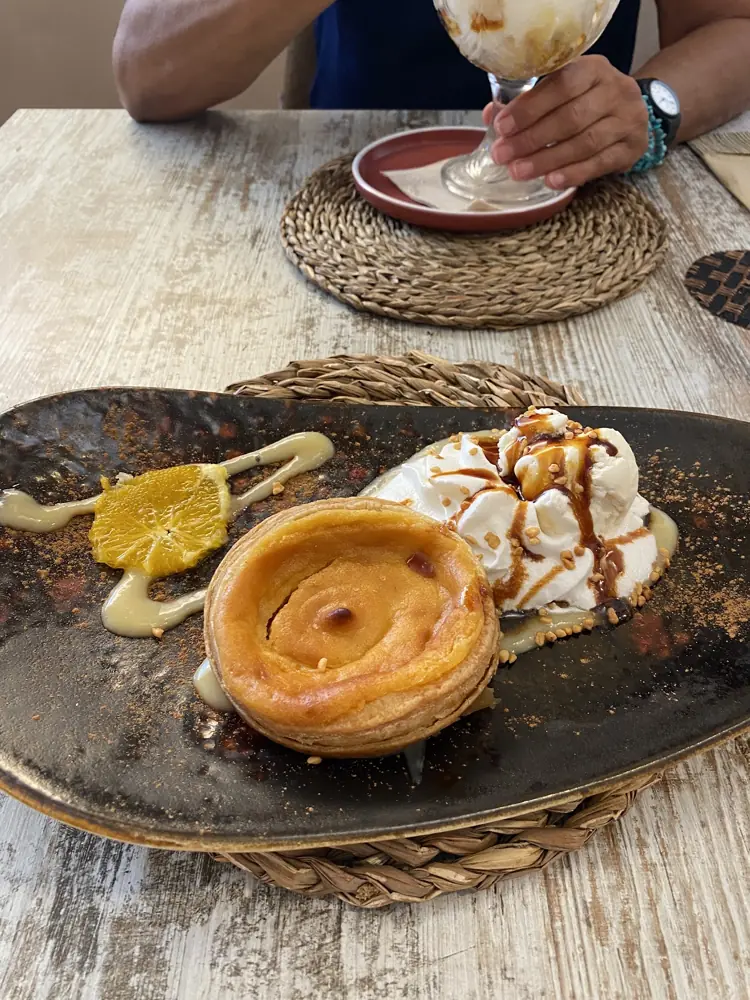
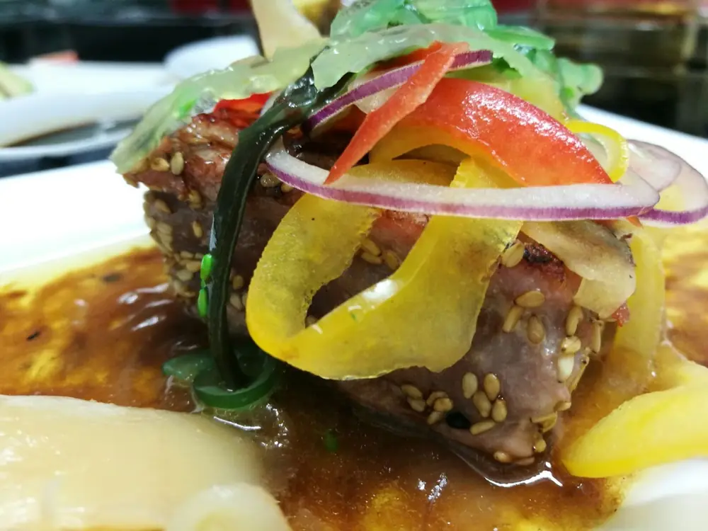
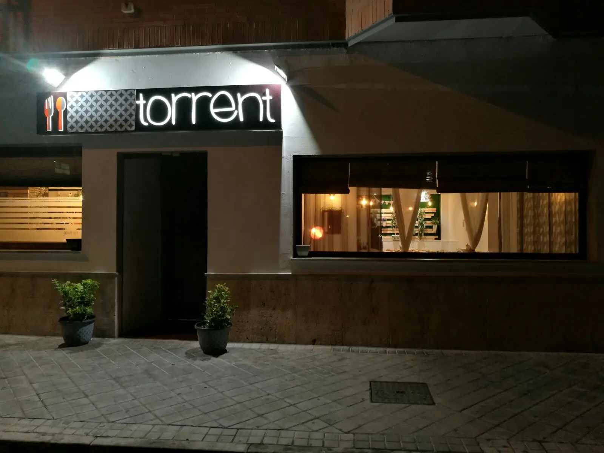
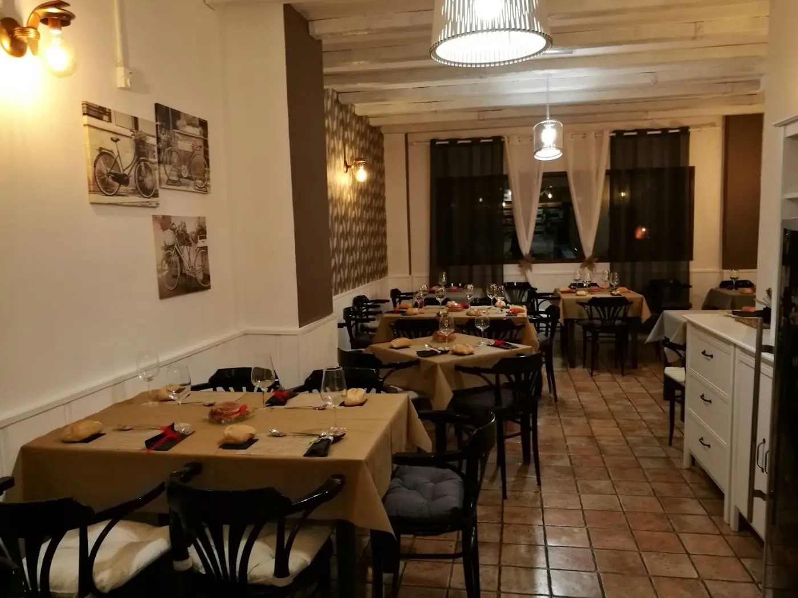

TORRENT
En la calle Margarida Xirgu se levanta el telón cada día: una carta variada, menús del día muy trabajados y una sala que cuida a quien entra. Aquí se viene a comer bien, sin prisa.

Platos que piden repetir
Lo más pedido de Torrent, según quienes ya se han sentado a su mesa. Pasa por encima de los platos con foto para verlos.
Precios, arroces del día y menú del día: cambian con el mercado. Pregúntalos en sala o llama y te los contamos.
926 09 91 69Del pase a tu mesa
Fotos hechas por los clientes de Torrent. Sigue bajando para verlas y pulsa una para verla entera.

Cálido y acogedor
Mesas vestidas, luz cálida y un equipo que está pendiente sin agobiar. También os echan una mano si preparáis una sorpresa.
Media de 734 reseñas en Google Maps. Lo que más se repite: la carta, las tapas, las cenas y la presentación de los platos.
Buena cocina y camareros muy atentos y muy amables.Reseña en Google
Excelente lugar, buena comida, buen trato, comida para celíacos.Reseña en Google
La carta es variada y los menú del día son muy elaborados y de mucha calidad.Reseña en Google
Se abre el telón
- Dirección
- C. Margarida Xirgu, 16
13600 Alcázar de San Juan (Ciudad Real) - Reservas y pedidos
- 926 09 91 69
- Ahora mismo
- —
- Síguenos
- facebook.com/torrentalcazar